系统调用机制
现在所有的通用OS都提供了许多系统调用，但它们所提供的系统调用会有一定的差异。对于一般通用的OS而言，可将系统调用分为如下三大类。
进程控制类系统调用
主要用于对进程控制的系统调用有：
- 创建和终止进程的系统调用。
- 获得和设置进程属性的系统调用。
- 等待某事件出现的系统调用。
文件操纵类系统调用
对文件进行操纵的主要系统调用如下：
- 创建和删除文件。
- 打开和关闭文件的系统调用。
- 读和写文件的系统调用。
进程通信类系统调用
除上诉三类系统调用外，常用的系统调用还包括设备管理类系统调用和信息维护类系统调用，前者主要用于实现申请设备、释放设备、设备I/O和重定向、获得和设置设备属性等功能，后者主要用来获得包括有关系统和文件的时间、日期信息、操作系统版本、当前用户以及有关空闲内存和磁盘空间大小等多方面的信息。
Linux三种接口
Linux提供了用户接口（shell），库函数接口（C语言程序调用库），系统调用接口三种接口。在系统调用接口这一层中，许多操作系统都提供了上面所介绍的各种类型的系统调用，实现的功能也相类似，但在实现的细节和形式方面却相差很大，这种差异给实现应用程序与操作系统平台的无关性带来了很大的困难。为解决这一问题，国际标准化组织ISO给出的有关系统调用的国际标准POSIX1003.1 (Portable OperatingSystem IX)，也称为“基于UNIX的可移植操作系统接口”。
POSIX定义了标准应用程序接口(API)，用于保证编制的应用程序可以在源代码一级上在多种操作系统上移植运行。只有符合这一标准的应用程序，才有可能完全兼容多种操作系统,
即在多种操作系统下都能够运行。
POSIX标准定义了一组过程，这组过程是构造系统调用所必须的，这组过程也就是下面要介绍的系统调用处理过程。通过调用这些过程所提供的服务，确定了一系列系统调用的功能。
需要明确的是，POSIX标准所定义的一组过程虽然指定了系统调用的功能，但并没有明确规定系统调用是以什么形式实现的，是库函数还是其它形式。
如早期操作系统的系统调用使用汇编语言编写，这时的系统调用可看成是扩展的机器指令，因而，能在汇编语言编程中直接使用。而在一些高级语言或C语言中，尤其是最新推出的一些操作系统，如UNIX新版本、Linux、Windows 和OS/2等，其系统调用干脆用C语言编写，并以库函数形式提供，所以在用C语言编写的应用程序中，可直接通过使用对应的库函数来使用系统调用，库函数的目的是隐藏访管指令的细节，使系统调用更像过程调用。但一般地说，库函数属于用户程序而非系统调用程序。如下图UNIX/Linux的系统程序、库函数、系统调用的层次关系。
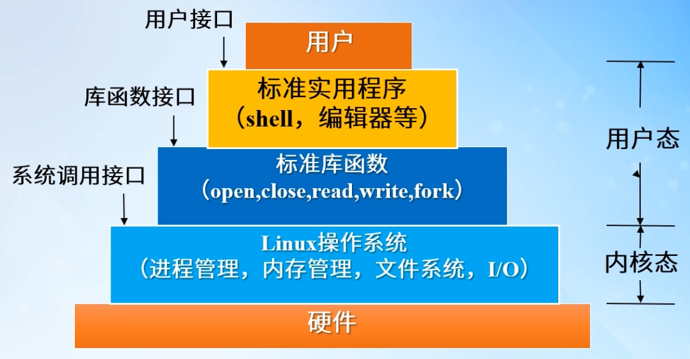
系统调用与API有什么区别？
区别：API是函数的定义，规定了这个函数的功能，跟内核无直接关系，最流行的API标准就是posix标准。
系统调用是通过中断向内核发请求，实现内核提供的某些服务。
C语言库函数则是基于Posix标准的具体实现。
联系：一个API可能会需要一个或多个系统调用来完成特定功能。通俗点说就是如果这个API需要跟内核打交道就需要系统调用，否则不需要。
程序员调用的是API（如C库函数），然后通过与系统调用共同完成函数的功能。
因此，API是一个提供给应用程序的接口，一组函数，是与程序员进行直接交互的。
系统调用则不与程序员进行交互的，它根据API函数，通过一个软中断机制向内核提交请求，以获取内核服务的接口。
并不是所有的API函数都一一对应一个系统调用，有时一个API函数会需要几个系统调用来共同完成函数的功能，甚至还有一些API函数不需要调用相应的系统调用（因此它所完成的不是内核提供的服务）。
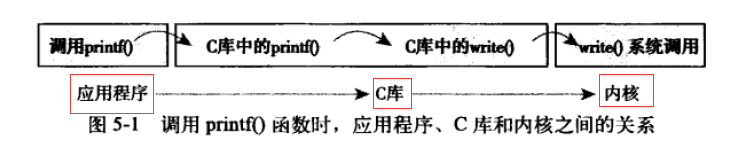
strace命令跟踪进程中的系统调用
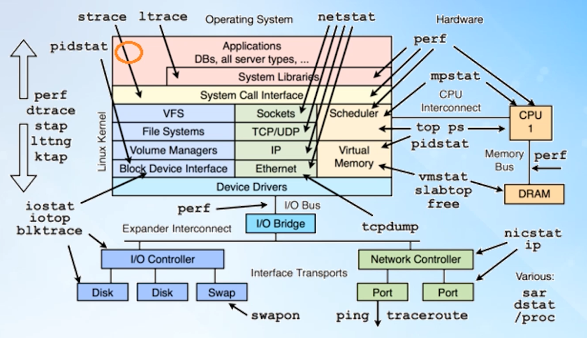
strace常用来跟踪进程执行时的系统调用和所接收的信号。 在Linux世界，进程不能直接访问硬件设备，当进程需要访问硬件设备(比如读取磁盘文件，接收网络数据等等)时，必须由用户态模式切换至内核态模式，通过系统调用访问硬件设备。strace可以跟踪到一个进程产生的系统调用,包括参数，返回值，执行消耗的时间。
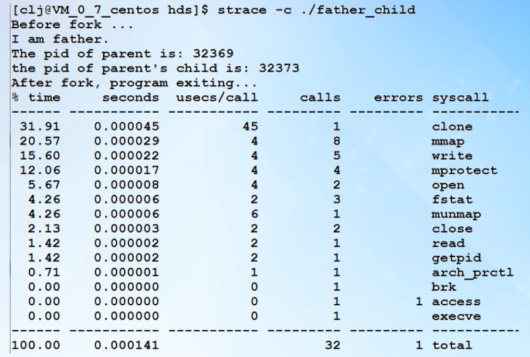
使用-c参数可以打印出每一个系统调用执行的时间，被调用的次数，出错的次数，系统调用的名称。其他参数如下所示。
命令详细参数
1 | -c 统计每一系统调用的所执行的时间,次数和出错的次数等. |
从用户态函数到系统调用
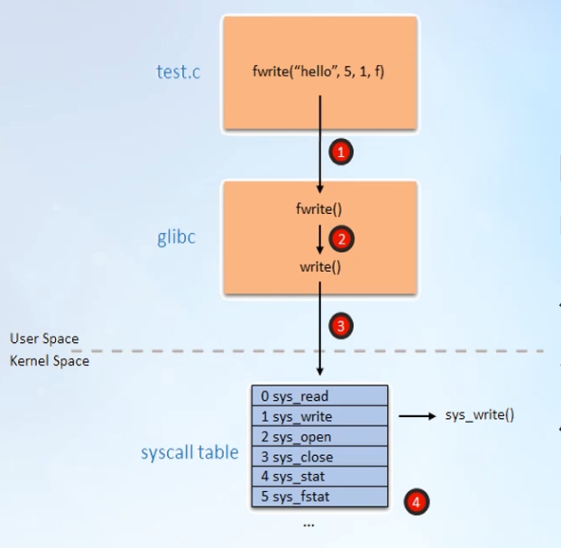
比如在程序中调用fwrite函数，而fwrite函数在 glibc库中调用系统调用write()，然后
从用户态陷入内核态，查找系统调用表，对应的系统调用服务例程为sys_ write。
系统调用中涉及的基本概念
系统态和用户态
在计算机系统中，通常运行着两类程序：系统程序和应用程序。为了防止应用程序对OS的破坏，应用程序和OS的内核是运行在不同的状态，即OS的内核是运行在系统态，而应用程序是运行在用户态。
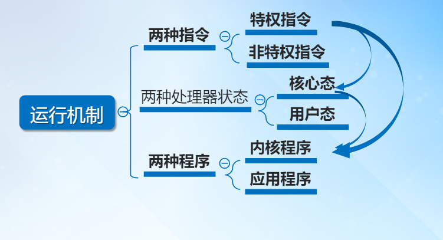
在计算机系统中设置了两种状态：系统态(或称为核心态)和用户态。在实际运行过程中，处理机会在系统态和用户态间切换。相应地，现代多数OS将CPU的指令集分为特权指令和非特权指令两类。
- 特权指令。特权指令是指在系统态运行的指令，它对内存空间的访问范围基本不受限制，不仅能访问用户空间，也能访问系统空间。如启动外部设备、设置系统时钟时间、关中断、转换执行状态等。特权指令只允许OS使用，不允许应用程序使用，以避免引起系统混乱。
- 非特权指令。非特权指令是在用户态运行的指令。应用程序所使用的都是非特权指令，它只能完成一般性的操作和任务，不能对系统中的硬件和软件直接进行访问，对内存的访问范围也局限于用户空间。这样，可以防止应用程序的运行异常对系统造成破坏。
这种限制是由硬件实现的，如果在应用程序中使用了特权指令，就会发出权限出错信号，操作系统捕获到这个信号后，将转入相应的错误处理程序，将停止该应用程序的与逆行，重新调度。
中断和陷入
中断是指CPU对系统发生某事件时的这样一种响应: CPU暂停正在执行的程序，在保留现场后自动地转去执行该事件的中断处理程序;执行完后，再返回到原程序的断点处继续执行。下图表示中断时CPU的活动轨迹。还可进一步把中断分为外中断和内中断。所谓外中断，是指由于外部设备事件所引起的中断，如通常的磁盘中断、打印机中断等;而内中
断则是指由于CPU内部事件所引起的中断，如程序出错(非法指令、地址越界)、电源故障等。内中断(trap)也被译为“捕获”或“陷入”。
通常，陷入是由于执行了现行指令所引起的;而中断则是由于系统中某事件引起的，该事件与现行指令无关。由于系统调用引起的中断属于内中断，因此把由于系统调用引起中断的指令称为陷入指令。
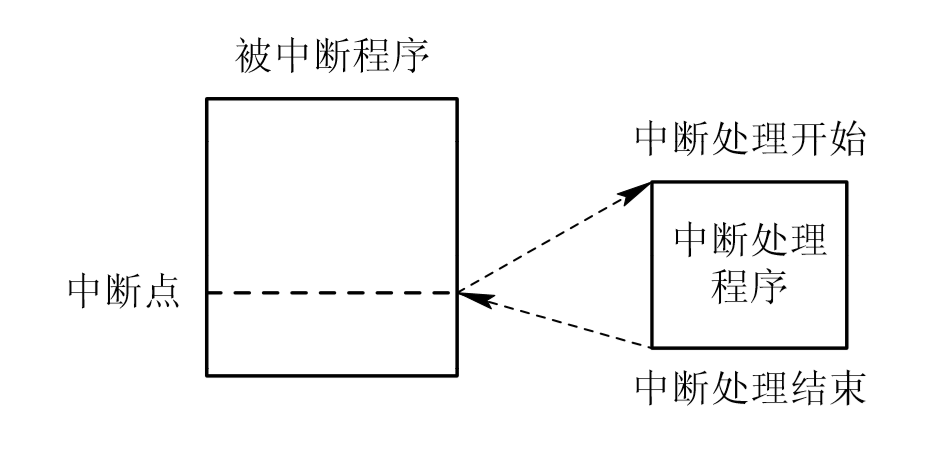
系统调用号和参数
在Linux中，每个系统调用被赋予一个系统调用号。这样，通过这个独一无二的号就可以关联系统调用。当用户空间的进程执行一个系统调用的时候，这个系统调用号就被用来指明到底是要执行哪个系统调用。进程不会提及系统调用的名称。
系统调用号相当关键，一旦分配就不能再有任何变更，否则编译好的应用程序就会崩溃。
因为所有的系统调用陷入内核的方式都一样，所以仅仅是陷入内核空间是不够的。因此必须把系统调用号一并传给内核。在系统调用命令(陷入指令)
中把相应的系统调用号传递给中断和陷入机制的方法有很多种，在有的系统中，直接把系统调用号放在系统调用命令(陷入指令)中;如IBM 370和早期的UNIX系统，是把系统调用命令的低8位用于存放系统调用号;在另一些系统中,则将系统调用号装入某指定寄存器或内存单元中，如MS-DOS是将系统调用号放在AH寄存器中，Linux则是利用EAX寄存器来存放应用程序传递的系统调用号。
在陷人内核之前，用户空间就把相应系统调用所对应的号放入eax中了。这样系统调用处理程序一旦运行，就可以从eax中得到数据。其他体系结构上的实现也都类似。
内核记录了系统调用表中的所有已注册过的系统调用的列表，存储在sys_call_table中。
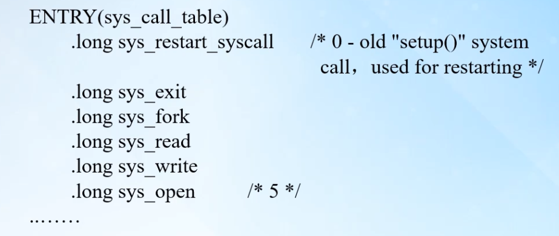
sys_call_table是一张由指向实现各种系统调用的内核函数的函数指针组成的表,一般在entry.s中定义。这个表中为每一个有效的系统调用指定了惟一的系统调用号。
除了系统调用号以外，大部分系统调用都还需要一些外部的参数输入。在执行系统调用时，如何设置系统调用所需的参数，即如何将这些参数传递给陷入处理机构和系统内部的子程序(过程)，常用的实现方式有以下几种：
- 陷入指令自带方式。陷入指令除了携带一个系统调用号外，还要自带几个参数进入系统内部，由于一条陷入指令的长度是有限的，因此自带的只能是少量的、有限的参数。
- 直接将参数送入相应的寄存器中。MS-DOS便是采用的这种方式，即用MOV指令将各个参数送入相应的寄存器中。系统程序和应用程序都可以对这些寄存器进行访问。这种方式的主要问题是这种寄存器数量有限，限制了所设置参数的数目。
- 参数表方式。将系统调用所需的参数放入一张参数表中，再将指向该参数表的指针放在某个指定的寄存器中。当前大多数的OS中，如UNIX系统和Linux系统，便是采用了这种方式。在x86系统上，ebx, ecx, edx, esi和edi按照顺序存放前五个参数。
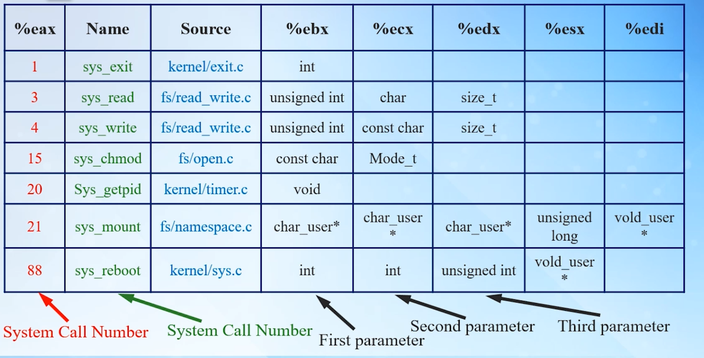
如何处理系统调用
在设置了系统调用号和参数后，便可执行一条系统调用命令。不同的系统可采用不同的执行方式。在UNIX系统中，是执行CHMK命令；而在MS-DOS中则是执行INT21软中断。系统调用的处理过程可分成以下三步：
首先，将处理机状态由用户态转为系统态；之后，由硬件和内核程序进行系统调用的一般性处理，即首先保护被中断进程的CPU环境，将处理机状态字PSW、程序计数器PC、系统调用号、用户栈指针以及通用寄存器内容等压入堆栈；然后，将用户定义的参数传送到指定的地址并保存起来。
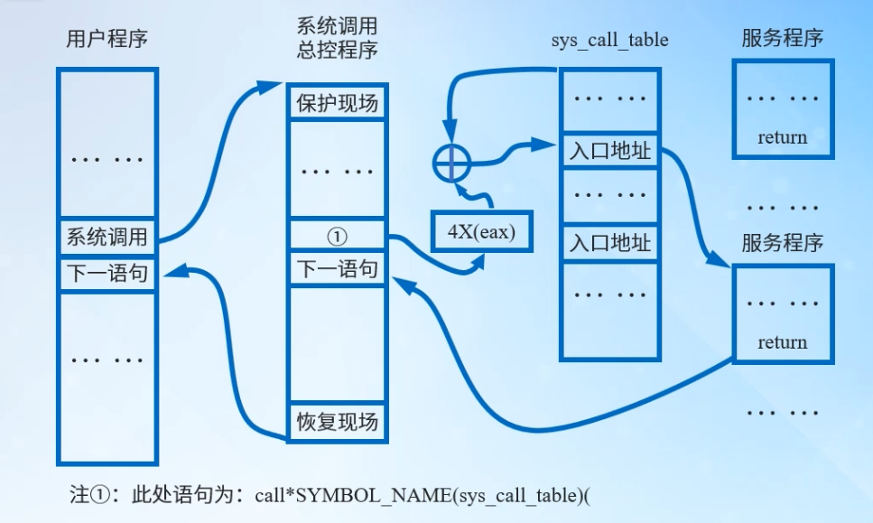
其次，分析系统调用类型，转入相应的系统调用处理子程序。为使不同的系统调用能方便地转向相应的系统调用子程序，在系统中配置了一张系统调用入门表。表中的每个每个表目都对应一个系统调用，其中包含该系统调用自带参数的数目、系统调用处理子程序的入口地址等。因此，核心可利用系统调用号去查找该表，即可找到相应处理子程序的入口地址而转去执行它。
最后，在系统调用处理子程序执行完后，应恢复被中断的或设置新进程的CPU现场，然后返回被中断进程或新进程，继续向下执行。
下面我们从用户态跟踪一个系统调用到内核态。
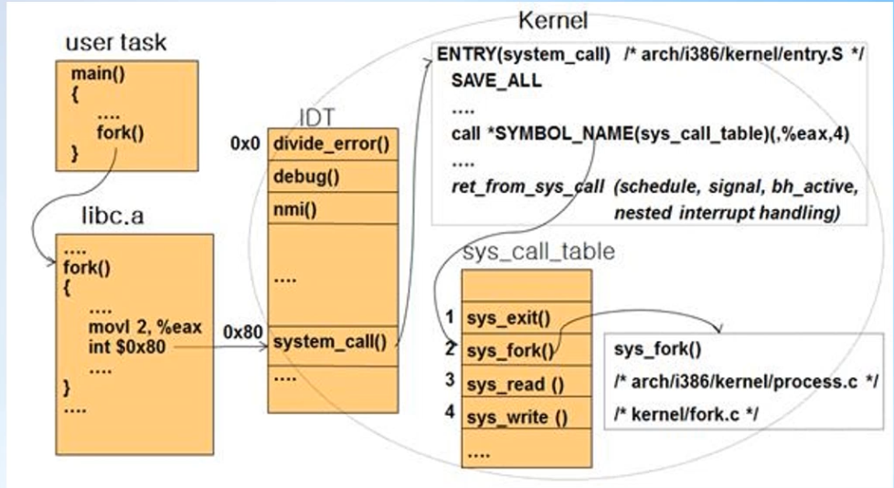
操作系统使用系统调用表将系统调用编号翻译为特定的系统调用。系统调用表包含有实现每个系统调用的函数的地址。例如，fork() 系统调用函数名为sys_fork。fork()系统调用编号是2，所以sys_fork() 位于系统调用表的第四个条目中（因为系统调用起始编号为0）。从地址 sys_call_table + (2 * word_size) 读取数据，得到sys_fork()的地址。
找到正确的系统调用地址后，它将控制权转交给那个系统调用。
读取函数结束后，从sys_fork()返回，它将控制权切换给 ret_from_sys。它会去检查那些在切换回用户空间之前需要完成的任务。如果没有需要做的事情，那么就恢复用户进程的状态，并将控制权交还给用户程序。
系统调用实例简介
系统调用安全，直接关系操作系统内核的安全，试想一个程序可以肆意的调用内核程序，将会非常危险，因此设计一个日志收集系统记录下每次系统调用的时间，调用的程序，将有助于系统管理员排查故障。
举例来说，与文件I/O相关的系统调用必须检查文件描述符是否有效。与进程相关的函数必须检查提供的PID是否有效。必须检查每个参数，保证它们不但合法有效，而且正确。
最重要的一种检查就是检查用户提供的指针是否有效。试想，如果一个进程可以给内核传递指针而又无须被检查，那么它就可以给出一个它根本就没有访问权限的指针，哄骗内核去为它拷贝本不允许它访问的数据，如原本属于其他进程的数据。
具体的实现过程将在下一节详细介绍。